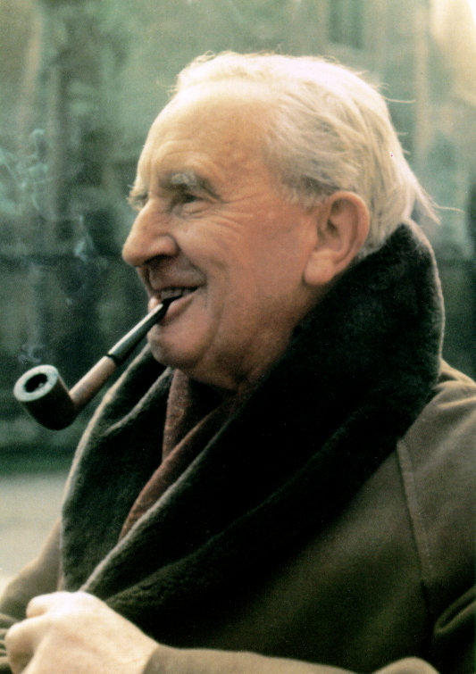

Beowulf
O poema narra a história de Beowulf, herói de grande força da tribo dos gautas, relacionados aos godos, na Suécia. Começa quando ele viaja até a Dinamarca para livrar o reino de Hrothgar dos ataques de Grendel, criatura monstruosa. Após matar Grendel, Beowulf enfrenta a mãe dele e a mata com uma espada.
J. R. R. Tolkien
J. R. R. Tolkien (1892-1973) foi um escritor, filólogo e professor universitário inglês e autor de Senhor dos Anéis e Hobbit, verdadeiros clássicos da literatura fantástica. Em 1972 foi nomeado Comandante da Ordem do Império Britânico pela Rainha Elizabeth II.
John Ronald Reuel Tolkien, conhecido como J. R. R. Tolkien, nasceu em Bloemfontein, África do Sul, no dia 3 de janeiro de 1892.
Especializou-se em línguas Anglo-Saxônicas, língua alemã e literatura clássica na Universidade de Oxford. Em 1914 alistou-se no Lancashire Fusilieres.
Em 1916 casou-se com Edith Bratt. Depois de servir na Primeira Guerra Mundial, continuou seus estudos de Linguística na Universidade de Leeds. Entre 1925 e 1945 lecionou língua e literatura anglo-saxônica na Universidade de Oxford, quando se especializou em literatura medieval.